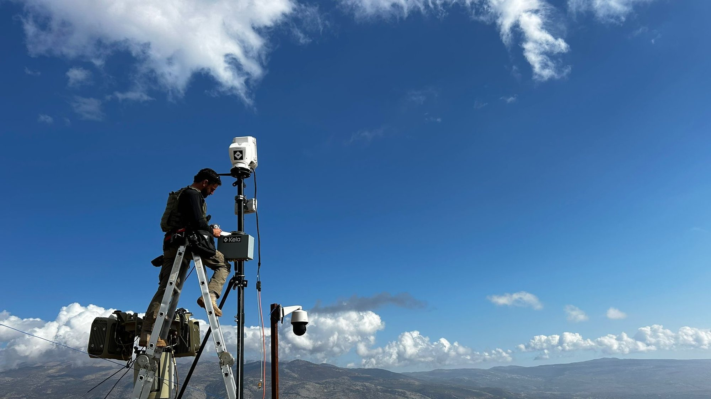

Press Release

Kela to Field Innoviz LiDAR Across Its Unified Situational Operations Platform
Tel Aviv · May 13, 2026
- Kela Technologies signed a framework agreement to procure up to several hundred InnovizTwo LiDAR units from Innoviz, with potential to scale to thousands over time.
- LiDAR will be integrated into Kela's unified situational operations platform alongside radar, electro-optical, thermal, and RF sensors for missions including armored vehicles, border security, and perimeter defense.
- The added 3D sensing is intended to improve sensor fusion into a single operational picture for commanders and autonomous systems.
- Key expected benefits: better target discrimination, stronger awareness in degraded conditions (darkness/dust/smoke/fog/glare/camouflage), and faster execution by reducing false alarms and speeding detection-to-engagement.
- Kela says LiDAR's proven scalability from civilian autonomy can now be leveraged in defense to give operators more time and clarity to act.
TEL AVIV, May 13, 2026 — Kela Technologies, a defense company building the open, modular platform that allied militaries use to win software-defined warfare, today announced a framework agreement to procure up to several hundred units of Innoviz Technologies' InnovizTwo LiDAR sensors, with Kela anticipating that the cooperation may scale to thousands of units in the coming years.
The agreement brings LiDAR — a core sensing technology used in autonomous mobility — into Kela's software-defined situational platform, where the sensors will operate alongside radar, electro-optical, thermal and RF systems across armored vehicles, border security and perimeter-defense missions.
LiDAR adds high-resolution three-dimensional perception, helping fuse multiple sensor streams into a single operational picture for commanders and autonomous systems. For Kela's customers — defense forces, homeland-security agencies and critical-infrastructure operators — the addition of LiDAR strengthens three functions:
- Target discrimination. Distinguish an incoming drone from background clutter, identify concealed vehicles and personnel, and separate real threats from decoys using precise three-dimensional depth and shape data.
- Operational awareness in degraded environments. Maintain visibility through darkness, dust, smoke, fog, glare and camouflage conditions that routinely degrade cameras and conventional optical systems during operations.
- Faster operational execution. Reduce false alarms, shorten the path from detection to identification to engagement, and give commanders a cleaner operational picture with fewer fragmented sensor feeds to interpret under pressure.
"Civilian autonomy proved that LiDAR can be built reliably and at scale. Defense now needs exactly that. Innoviz is the latest of many proven technologies we are bringing into Kela's open architecture, to give operators the sharpest possible picture of the situation and the time to act on it."
Hamutal Meridor — Co-founder and President, Kela
About Kela
Kela Technologies builds the open, modular platform that allied militaries use to win software-defined warfare. The company combines AI-driven sensor fusion, threat classification, and command software with field-hardened hardware, including modular payloads, optical and fiber communications, and resilient command links, to give operators a single, real-time picture of the situation and the tools to act on it at machine speed. Founded by veteran defense and technology operators from Israel, Kela's platform is deployed today across counter-UAS, counter-intrusion, base security, border protection and armored-vehicle missions. Headquartered in Tel Aviv and Washington D.C., Kela works directly with allied governments, defense primes and program offices. For more, visit kelasys.com.